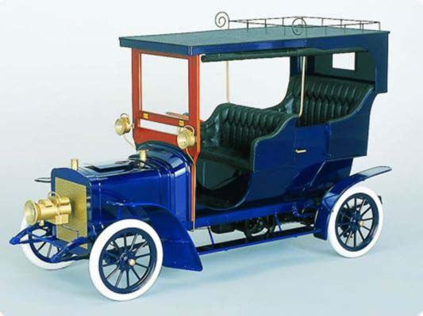
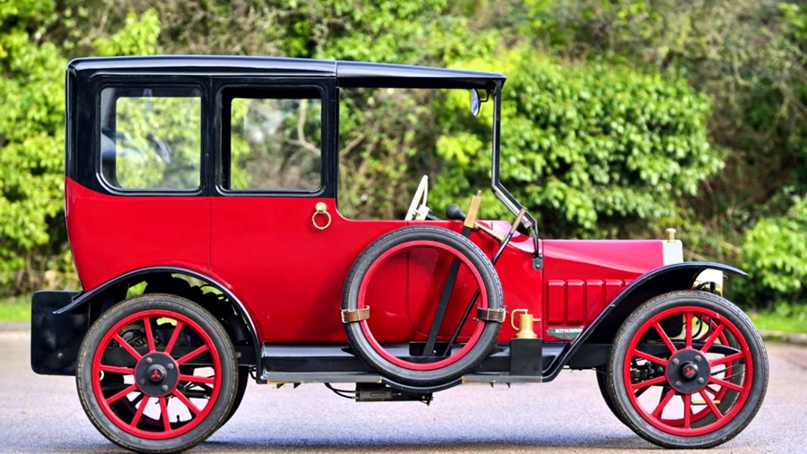
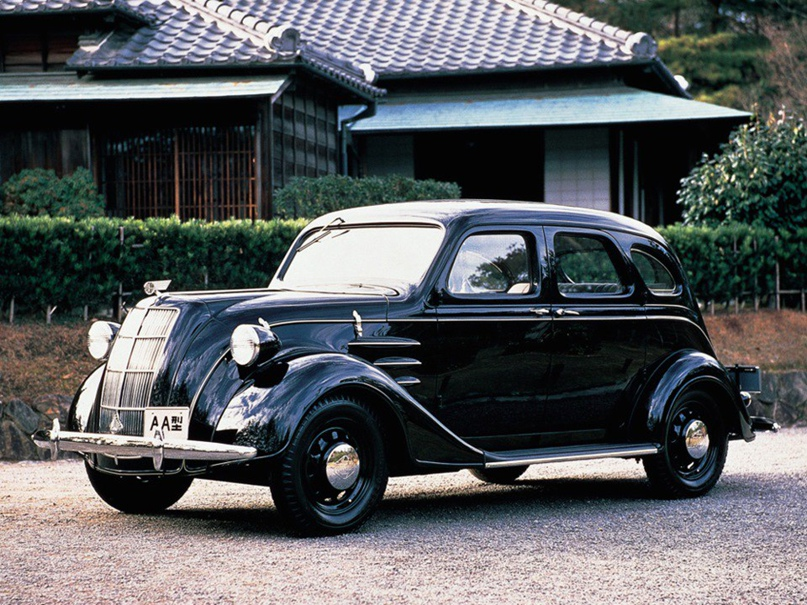
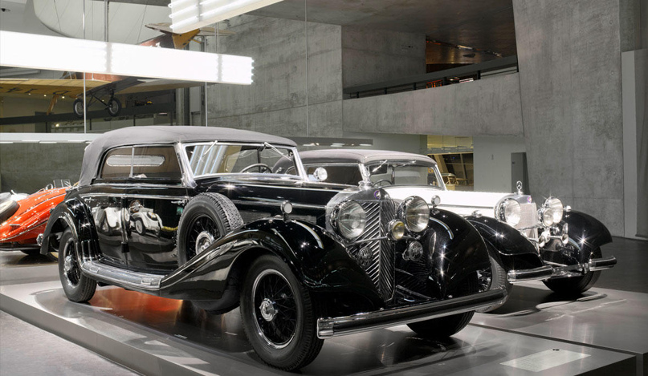
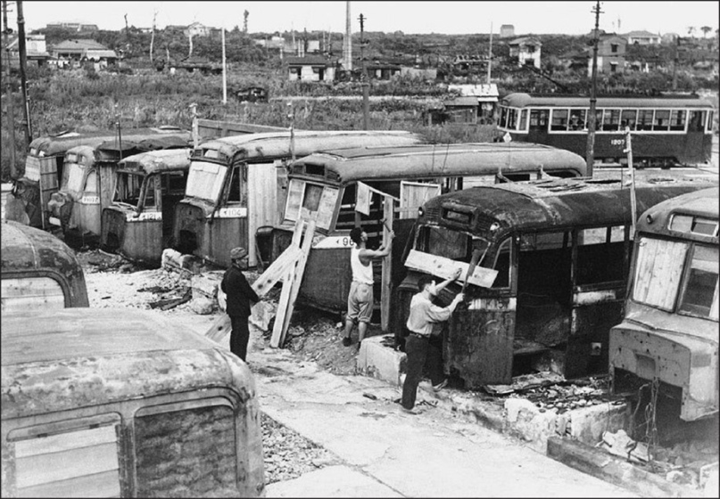
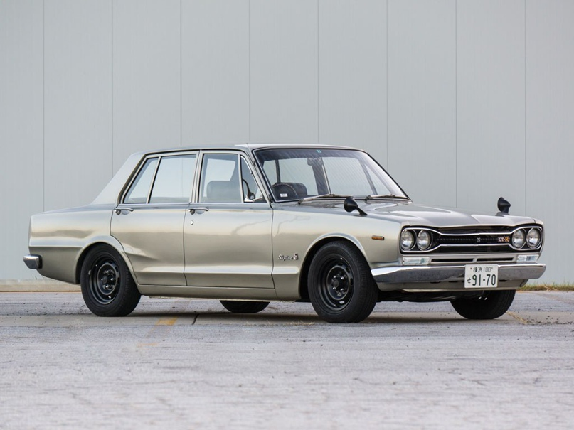
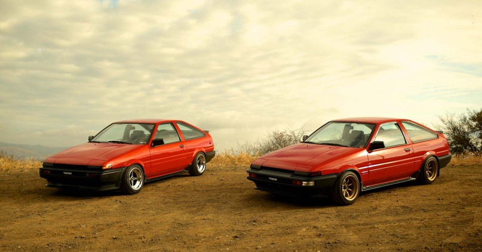
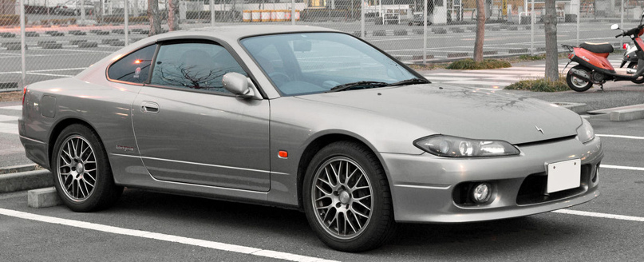

Первые опыты по созданию автомобилей в Японской Империи были проведены в начале XX века. В 1905 году, в Городе Хиросима инженер Шинейтаро Иошида представил омнибус с импортным двигателем внутреннего сгорания, а уже в 1907 году инженер Иошида представил первую японскую легковушку, которая получила прозвище «Такири», что в переводе с японского означает «гремящий».

Первым же серийным автомобилем в Японии стал Mitsubishi Model A, созданный в 1917 году на основе итальянского автомобиля FIAT Tipo 3.

Дальнейшая история японского автопрома создавалась в основном при помощи лицензий на производство автомобилей европейских и американских марок. Так, например, первыми автомобилями компаний Datsun и Nissan являлись британские Austin 7 и американские Graham-Paige, автомобили компании Chiyoda (ныне Isuzu) — Pontiac, у Sumida — LaSalle. До вступления Японии во Вторую мировую войну в городах Йокогама и Осака находились автосборочные производства Ford и GM. В 30-40-х годах японские автомобили разрабатывались уже собственными силами, но отталкиваясь от американской школы автостроения. Так, в 1936 году был представлен первый автомобиль марки Toyota — модель AA, имевшая значительное сходство с американским Chrysler Airflow 1934 года. 
В середине 30-х годов был принят закон, по которому все промышленные предприятия, расположенные на территории Японии, стали собственностью самой Японии, в результате чего американские автопроизводители свернули производство в Японии. В то время происходила милитаризация страны, начался уклон в создании и производстве автомобилей для армии, это и грузовики, шасси для бронеавтомобилей, а также штабные авто. Легковые автомобили, которые выпускались в ограниченных количествах, в основном распределялись по государственным и военным ведомствам. Чтобы получить в распоряжение личный автомобиль, нужно было быть очень состоятельным человеком. К слову, у императора Хирохито был лимузин Mersedes Benz 770. 
После поражения во Второй мировой войне и дальнейшей оккупации страны произошло замораживание развития автопрома в Японии, в связи с санкциями, наложенными оккупирующими силами на эту промышленность. Эти меры были сняты в 1949 году, когда предприятия японского автопрома признали неподлежащими демонтажу и вывозу из страны. Автомобилестроение было в плачевном состоянии. Японские инвесторы просто не считали автопром привлекательным для инвестиций. Однако в Министерстве внешней торговли и промышленности Японии считали автопром локомотивом, который сможет вытянуть японскую экономику из тотального упадка. Выйти из тяжелой ситуации помогла уже другая война, Корейская, начавшаяся в июне 1950 года. 
После поражения во Второй мировой войне и дальнейшей оккупации страны произошло замораживание развития автопрома в Японии, в связи с санкциями, наложенными оккупирующими силами на эту промышленность. Эти меры были сняты в 1949 году, когда предприятия японского автопрома признали неподлежащими демонтажу и вывозу из страны. Автомобилестроение было в плачевном состоянии. Японские инвесторы просто не считали автопром привлекательным для инвестиций. Однако в Министерстве внешней торговли и промышленности Японии считали автопром локомотивом, который сможет вытянуть японскую экономику из тотального упадка. Выйти из тяжелой ситуации помогла уже другая война, Корейская, начавшаяся в июне 1950 года. 
Начиная с 1970-х годов предприниматели начали экспорт собственной автомобильной продукции в США.
Однако это привело к конфликту между США и Японией в 1974 году. Для решения данной проблемы японское правительство установило ограничение на вывоз японских авто за границу.
Решение конфликта положительно сыграло на развитии японского автомобилестроения.

В 1990-1995 гг. наблюдался спад производства автомобилей до уровня 1979 года.
Пришёл период стагнации, период, характеризирующийся застоем производства и торговли на протяжении длительного времени,
в частности до 2002 года.

В начале XXI века в этой отрасли было занято около 8 млн человек. Особенность этого периода стала массовая организация сборочных филиалов японских компаний в Азии.
С 1999 по 2009 годы объем производства на азиатских предприятиях японских компаний вырос в 3,3 раза — с 1 млн 548 тыс. до 5 млн 145 тыс. машин в год.
В результате землетрясения и последовавшего за ним цунами 2011 года в Японии на некоторое время останавливались сборочные линии автозаводов, из-за возникшего энергетического кризиса, вызванного аварией на АЭС Фукусима-1. Также был приостановлен экспорт японских автомобилей и запчастей из-за закрытия основных морских портов в стране.